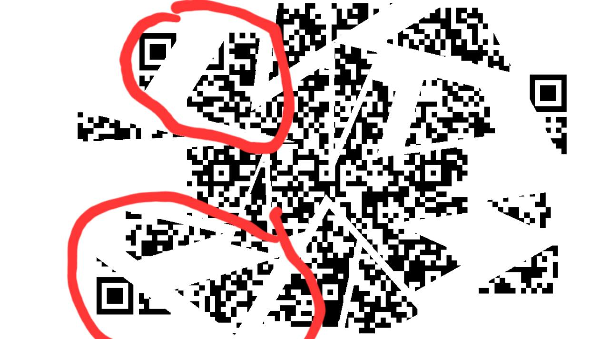
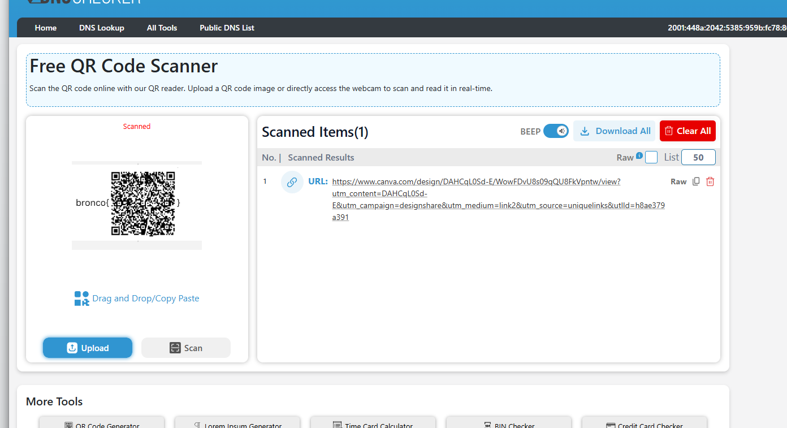
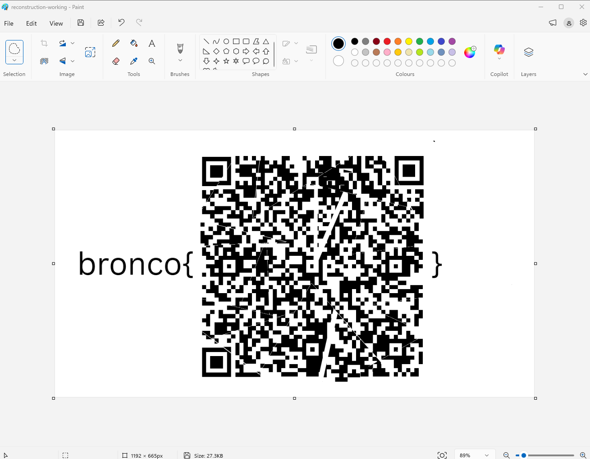
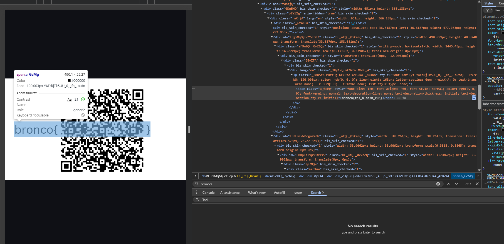

BroncoCTF / Misc
QR Reconstruction
A short writeup on rebuilding a fragmented QR code by recognizing the spatial clue that automated recovery tools missed.
Preface
Well, this challenge was really interesting to me. It looked easy, yet it ended up as the second-least-solved challenge in the event. I think the reason is that it is almost an anti-LLM problem: the winning move was not a clever prompt or a sophisticated reconstruction algorithm, but simply looking at the image carefully and moving the pieces by hand.
Summary
The QR code had been split into fragments and pulled apart. The pieces were not randomly shuffled: neighboring regions still remained close to one another. Once that detail became clear, the challenge stopped being an algorithmic reconstruction problem and became a straightforward visual alignment task.
- EventBroncoCTF
- CategoryMisc
- Failed pathAutomation
- SolutionManual alignment
Dead Ends
My first instinct was to automate the recovery. I tried several online QR repair tools, but none of them could read the image. I also brainstormed with an LLM and experimented with multiple reconstruction algorithms. Those attempts produced no usable QR code because they treated the fragments as a general puzzle instead of paying attention to how the challenge image had been arranged.

The Key Observation
Looking at the image more carefully revealed the actual rule: the fragments had been pulled away from their original locations, not randomly permuted. Their relative positions were largely preserved. Finder-pattern corners, continuous black modules, and nearby fragment boundaries therefore provided enough information to restore the layout visually.
This was the turning point. Instead of trying to infer a complex global arrangement, I only needed to move each local group back toward the center and align obvious neighboring edges.
Manual Reconstruction
I opened the image in Microsoft Paint and moved the fragments into place. I used the three QR finder patterns as anchors, then adjusted the remaining pieces until the module grid became continuous enough for a scanner to recognize it. The result did not need to be pixel-perfect; QR error correction handled the small gaps and overlaps.

Scanning The Result
After the manual reconstruction, an online QR scanner successfully decoded the image and returned a Canva link. Opening the recovered page and inspecting the rendered content revealed the flag.


Flag
bronco{th3_h1dd3n_cu3}